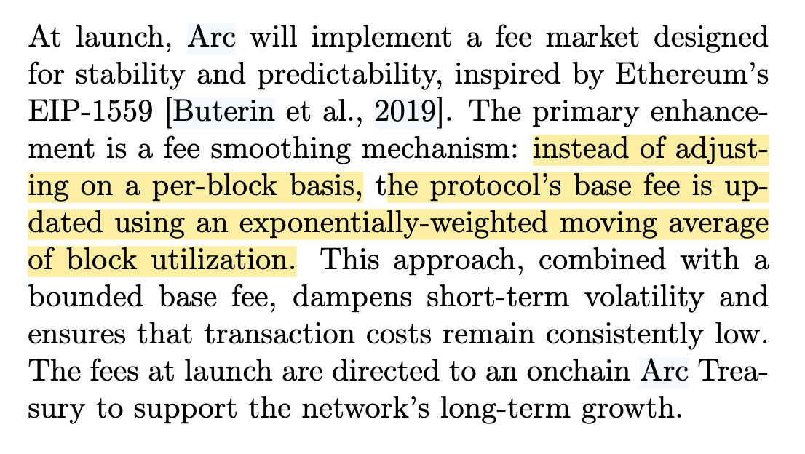
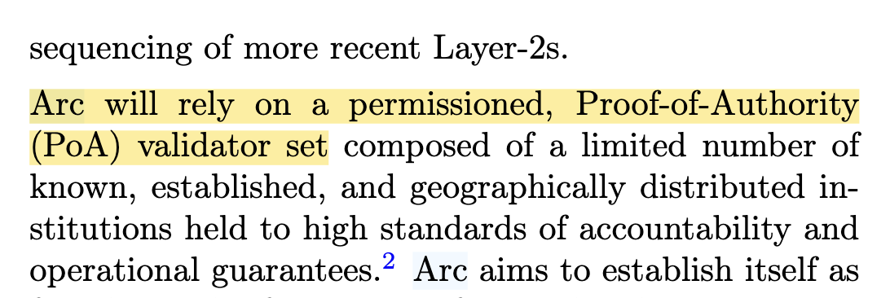
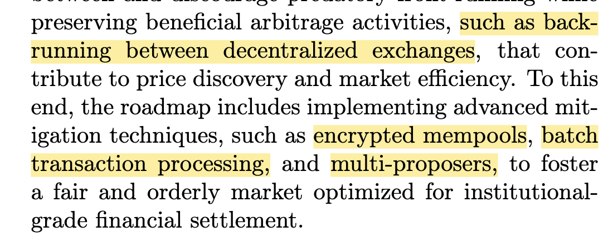

Arc 是 Circle 公司在筹备和计划推出的一个 Layer 1 区块链网络。8月12日，Circle 正式发布了关于 Arc 的 宣发文章。Circle 就是发行 USDC 代币的公司，拥有强大的技术实力和资金背景。
由于 Circle 的强大背景，我们几乎不需要怀疑 Arc 的技术含量，一定能做到世界领先级别的，也许会像当年的 SOL 一样，值得持续关注。
Arc 目前处于测试网还未公开发布的阶段，只允许合作伙伴加入的测试网。公开的参考资料只有白皮书，不过出于对 Circle 技术实力的信任，白皮书中肯定包含了技术创新在里面的。
假如将来 Arc 正式上线，想必会改变的，不只是稳定币赛道的格局：
所以了解 Arc 的技术架构对我们以及未来的发展会很有帮助。
看了白皮书的前半段，发现里面仍然有很多语焉不详的地方，也有一些刻意吹牛的地方。
Arc 有专门说自己的费用模型，因为用了 USDC 做原生手续费，所以更加可以预测，比如以太坊上因为 ETH 的价格是波动的，导致用户难以准确估算一笔交易的手续费是多少，而 USDC 的价格是恒定的，只需要考虑协议费用的波动。类似这样的话其实属于很正确的废话，不需要 Arc 在白皮书里说，这是大家都能懂得东西。
关键是 Arc 没说清楚自己的手续费到底是怎么设计的，只说参考了 EIP-1559，并且设置了平滑的波动，设置了上限和下限。理想是很好，关键是没说具体怎么做的。
再就是 Arc 有专门说自己链最终一致性的问题，比特币和以太坊就不是什么的。因为 Arc 用的共识是 PBFT，当然自然而然就有最终一致性，不需要刻意强调。
不过 Arc 技术硬核的地方来了，Arc 没有用某种现成的 PBFT 的实现，而是自己根据 Tendermint 的协议论文，实现了一个 Rust 版本出来，名字叫 malachite，代码早在去年就 开源 并且处于公开研发状态。这可不是一般公司能干的了的事情。
（话说，好像最近新出的链、项目，只要是和区块链相关的，只要是有点性能方面追求的，都在用 Rust。直观感受上 Rust 的出现频率越来越高了。）
malachite 还有个有意思的项目 malaketh-layered，这个项目能让以太坊的执行层客户端，使用 malachite 做公式层。这个想法以及实现都很牛，也就是说，以后以太坊就有 PBFT 版本的链了。Reth+malachite 可以直接运行，联盟链将会有原生的 EVM 版本，这听起来很诱人。
虽然 Arc 的技术实力不错，但是有个不小的问题，Arc 竟然选择了 PoA 的模式，禁止外部节点的参与，只允许合作伙伴承担起网络出块的职责。这就稍微有点影响了，对于 USDC 本身的业务没影响，影响的是整体的格局，外部无法参与的话，其他项目就不能直接抄 Arc 的模式了，不公开还要保持信任是个问题。
性能方面，Arc 的白皮书里也说了不少。尽管用了 Rust 语言，也只是能提高一些硬件方面的性能而已，PBFT 算法层面的限制始终在那儿，所以实际上并没有比 Cosmos 的 CometBFT 交易速度快多少。
MEV 和隐私保护是两个东西，但解决手段相似。Arc 在 MEV 方面试图通过加密 mempool、批处理交易等方式，来避免有害的 MEV：
类似的，在金融领域，保密的交易是一个必要的功能，有些企业不可能愿意公开自己的转账记录。
Arc 在工程上，怎么解决这些问题呢？在 malachite 的 项目目录 下，看到了试图兼容 Starknet 的身影。Starknet 是一个 ZK Layer 2 方案，Arc 应该是想用 Layer 2 的模式来保护隐私、避免 MEV，比如链下完成交易、生成证明，链上结算，这样就很好的解决了隐私问题。
（Starknet 的技术有点意思，尤其是 Arc 为什么选择 Starknet 而不选择 ZK Scroll 之类，说明 Starknet 的技术有可取之处，有必要关注下。）
因为 Arc 是 EVM 完备的，自然而然就可以轻易迁移一些 DeFi 应用上去。
整个白皮书看下来，有几点没解开的疑惑：
总结来说，一开始对 Arc 的判断稍微有偏差，Arc 没有什么黑科技。但是 Arc 仍然有强大和专业的技术实力，基于 malachite 这样的共识层，可以做出很多有意思的应用。至于 Arc 将改变世界的判断，给现有的 Layer 1 链带来冲击肯定是会的，开发者搭建区块链会多出一些选择。
还是期待 Arc 网络正式开源和上限，期待后续，然后再次对 Arc 进行技术分析和解读。